지금부터
생활코딩을 시작하기 전인
2010년으로 돌아가서
저의 이야기를 들려드릴게요.
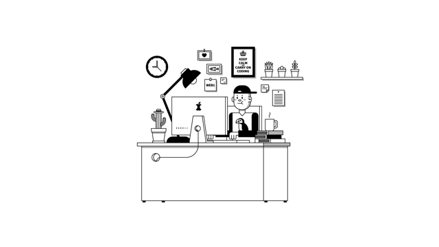
저는
컴퓨터 프로그래머로 일하고 있었고,
프로그래머가 아닌 동료들과
함께 일할 기회가 많았습니다.
저는
컴퓨터 프로그래머로 일하고 있었고,
프로그래머가 아닌 동료들과
함께 일할 기회가 많았습니다.
동료들의 요청 중에는
약간의 지식이 있으면
개발자를 통하지 않고도
스스로 해결할 수 있는 일이 많았습니다.
난해해 보이는 개념들 때문에
소통에 어려움을 겪는 동료도 많았습니다.
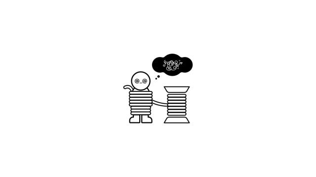
어느 날 문득
직장동료들에게
SQL이라는 컴퓨터 언어를
알려주고 싶다는 생각이 들었습니다.
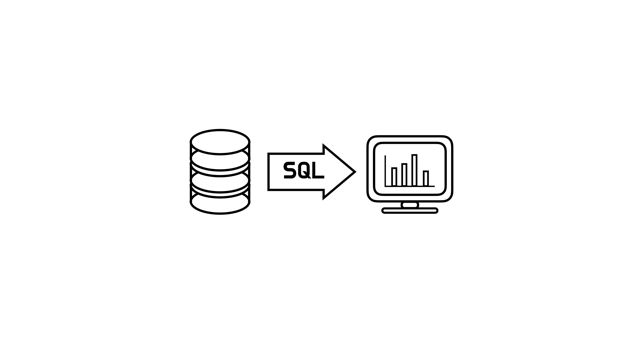
강의를 열었고 반응이 좋았습니다.
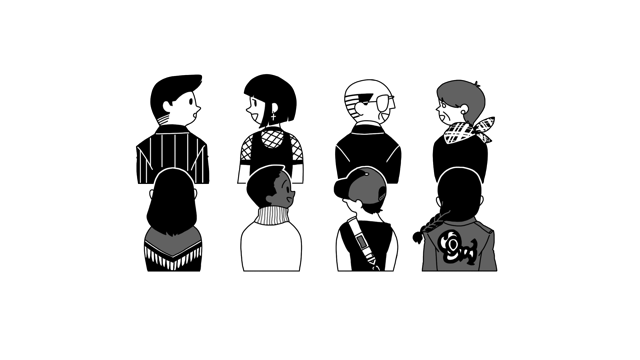
강의는 생각보다 재미있는 일이었습니다.
생각해보면
제 안에서 잠자고 있던
선생님의 기질에 눈을 뜨게 된 계기가
그때부터가 아니었을까 싶어요.
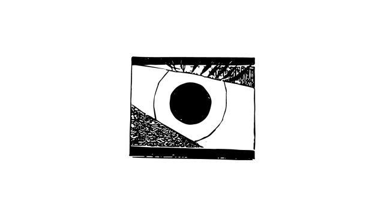
천천히 판이 커지기 시작했어요.
나중엔 꽤 큰 규모로
일반인을 대상으로도 강의하기 시작했죠.
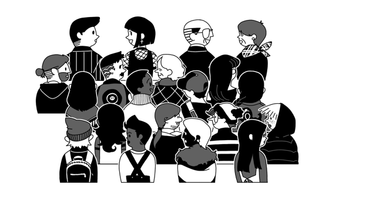
제가 생활코딩을 시작하고 얻은 선물이 있어요.
무대 공포를 극복하게 되었다는 것이에요.
제가 알게 된 것이 있는데
누구나 사람들 앞에서 1시간 이상 말할 기회가 있다면
1시간 뒤에는 떨지 않습니다.
그런 기회가 주어지지 않기 때문에
무대 공포를 극복할 계기가 생기지 않는 것이죠.
생활코딩은 저에게 그런 기회를 주었습니다.
무대 공포증을 가지고 계신 분이 계신다면
여러분에게도 그런 기회가 있기를 바랄게요.
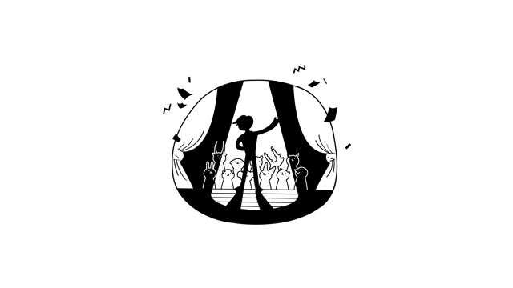
한편으론 이런 생각도 들었어요.
강의는 귀한 일이었지만
하는 쪽이나 받는 쪽이나
너무 많은 돈과 시간을 써야 했습니다.
똑같은 이야기를 계속해야 했고,
멀리 있는 사람들은 참석하지 못했습니다.
그즈음에 시대적으로 중요한 사건이 있었습니다.
바로 youtube나 vimeo 같은
온라인 동영상 서비스들이 생겨나기 시작했어요.
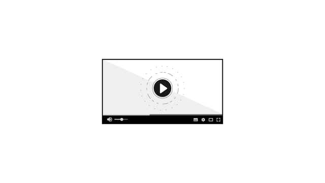
이 서비스들은
무료로 영상을 공유할 수 있게 해주었어요.
저는 이것이 엔터테인먼트 분야에서
혁명적인 사건이라고 생각해요.
그리고 언제부턴 가는
HD 화질을 지원하기 시작했습니다.
저는 이것이 교육 역사에서
중요한 사건이라고 생각합니다.
HD 화질이 되면서
얇은 글씨를 영상으로 표현할 수 있게 되었거든요.
그때부터 저는 컴퓨터 화면을 촬영해서
동영상으로 수업을 공유하기 시작했습니다.
한번 생각해보세요.
인류 역사를 통틀어서
저처럼
누군가에게 지식을 알려주고 싶은 사람이
얼마나 많았을까요?
그런데 마침 제가 이런 일을 하고 싶은 그때에
인류 역사상 처음으로
무료 동영상 서비스들이
HD 화질을 무료로 지원하기 시작했던 것입니다.
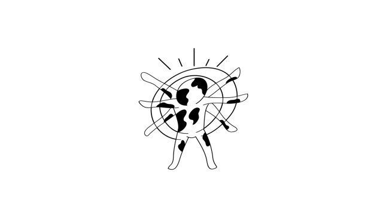
과거에는 상상도 할 수 없는 일이었고,
미래에는 누구나 당연하게 생각할 일인데
그 한가운데에 서 있었다는 것은
정말 큰 행운이 아니었을까요?
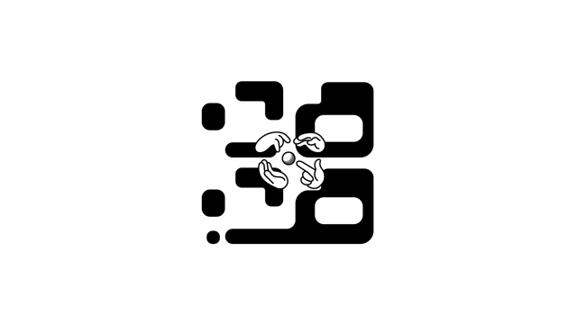
저는
지금을 중심으로 전후 20년은
아날로그가 디지털로
오프라인이 온라인으로 전환되는
대변화의 순간이라고 생각합니다.
그 한가운데에 우리가 서 있습니다.
앞으로 1000년 뒤에 누군가는
이 시대를 부러워할지도 모릅니다.
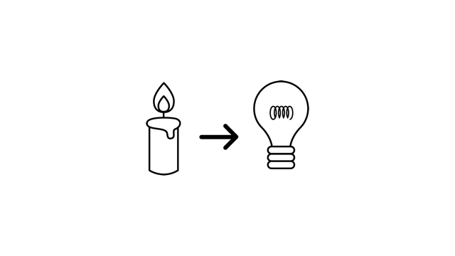
아무튼
저는 동영상으로 수업을 만들기 시작했습니다
그런데 문제가 있었어요.
코딩 수업은
내용이 많기 때문에
하나의 영상으로 만들 수가 없었어요.
20시간짜리 동영상을 누가 보겠어요.
그래서 5분~10분 정도 분량으로 영상을 쪼개서
수업을 만들기로 했습니다.
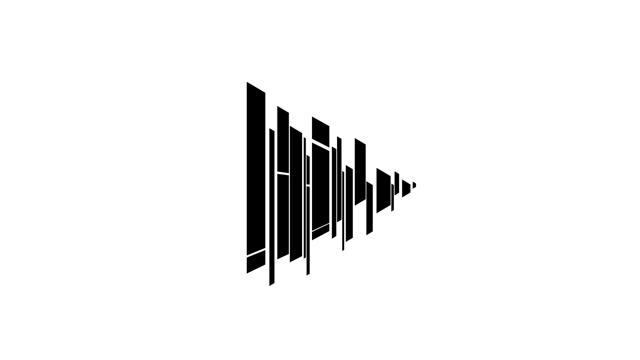
그렇게 수업을 만들었더니
또 문제가 있었습니다.
먼저 봐야 할 것과
나중에 봐야 할 것의
선후 관계가 잘 정리가 되지 않습니다.
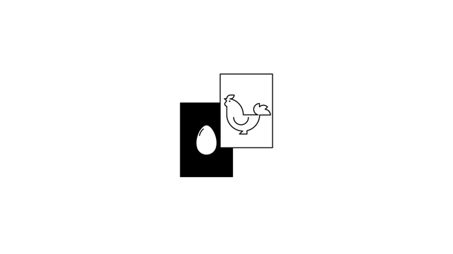
또 영상마다
예제 코드나,
첨부 링크나,
보충설명 등이 필요한데
이것을 잘 정리 정돈하는 것이
동영상 서비스만으로는 어려웠습니다.
장애물을 만나게 된 것이죠.
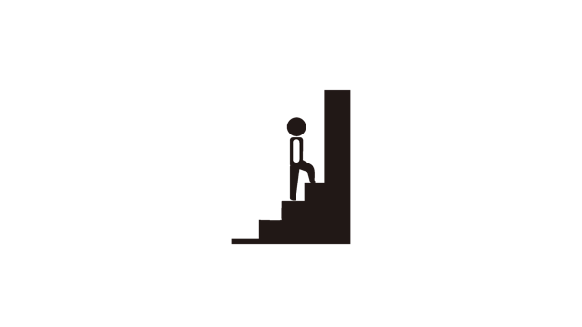
저는 장애물을 만나면
가슴이 두근거리고,
불길한 예감이 들기 시작하거든요.
직접 무엇인가를
또
만들기 시작할 것 같은 예감 말이죠.
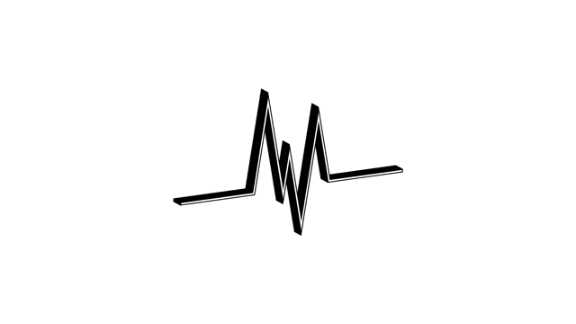
정신 차려보니까
종이를 꺼내놓고
무엇인가를 그리기 시작하는
자신을 발견했습니다.
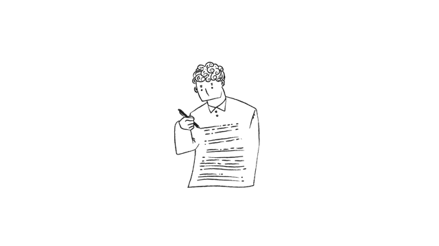
직접 만들자 병이 또 시작된 것입니다.